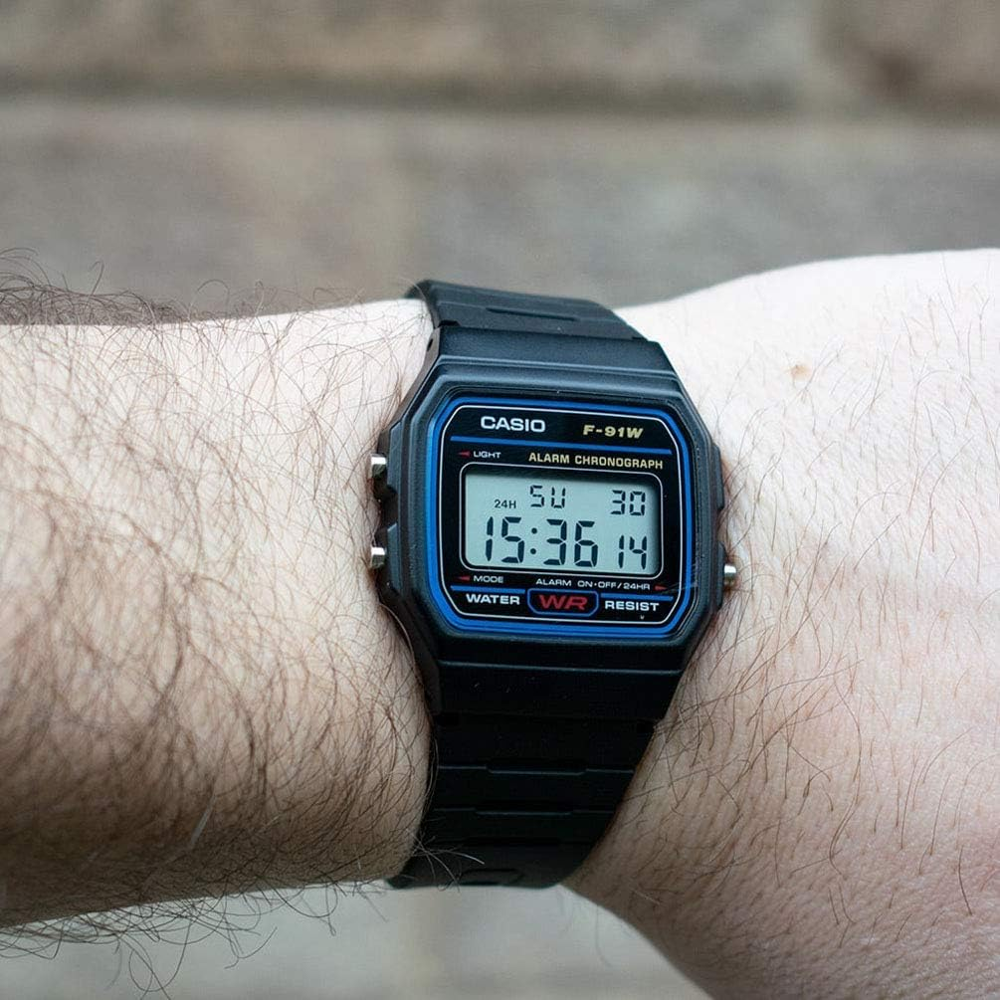
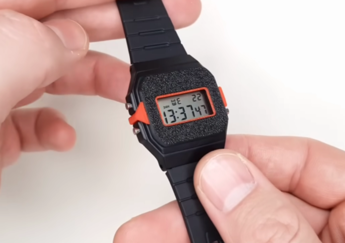
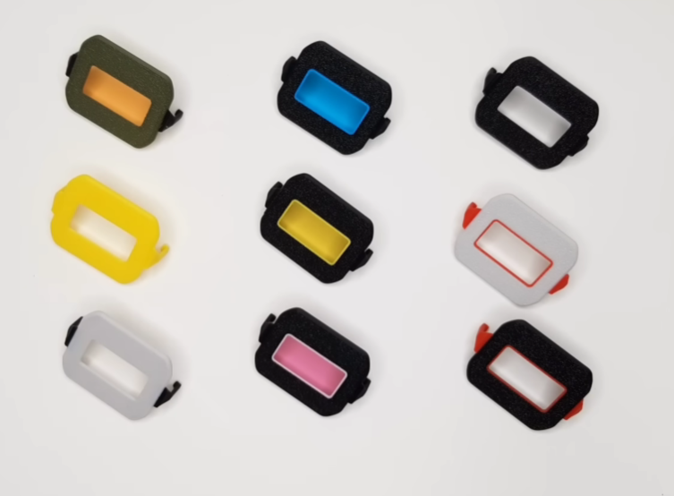
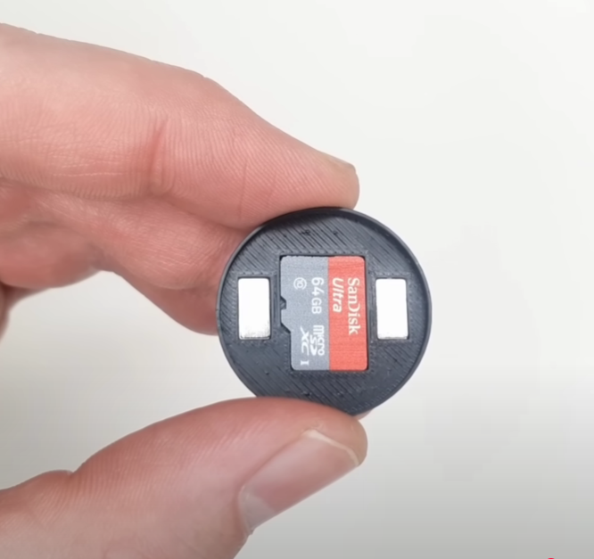
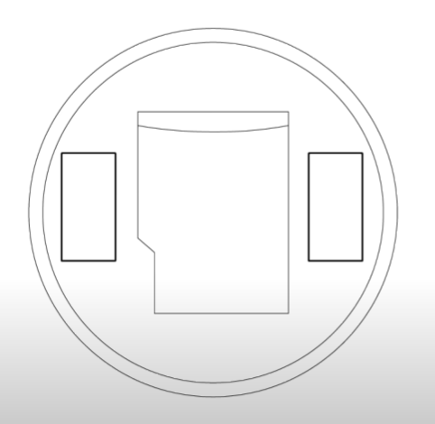

Simple, open-source designs by NODE
These mods are designed to enhance and personalize your Casio F-91W without any tools or watchmaking skills. Both are 3D-printable and installable by hand — a clip-on face cover and a magnetic Micro-SD add-on.

The clip-on screen covers let you instantly change your F-91W face without opening the acrylic front. The angular design of the watch makes it perfect for a snap-fit cover system.

You can use photography gels or model-making plastics to alter the display tint. For best readability, lighter filters are recommended.

This magnetic attachment holds a Micro-SD card on the backplate — no need to unscrew or break the seal. It stays secure during wear, preserving the watch’s water resistance.


Watch NODE’s original demonstration of the Casio F-91W mods:
All STL and design files are open-source and available in this repository. Optimized for 0.08mm layer height and designed to print easily on standard FDM printers.
Released under the MIT License. You are free to remix, modify, and share these designs — just credit the original creator.